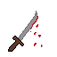
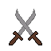
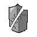
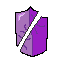

Legends of Wpierdol
Wiki mechanik · Web Edition
Gra to turowy „idle-RPG" przeglądarkowy: gracz tworzy postać, wybiera jedną z 5 klas i wspina się przez 50 poziomów przeciwników, kupując bronie, przedmioty i ulepszenia za zdobywane pieniądze oraz odblokowując kosmetyczne skiny za Skin Pointy.
Klasy postaci
Wybór jest jednorazowy przy tworzeniu postaci. Każda klasa ma inny limit pancerza i startowe bonusy.
Zabójca
- +10% obrażeń broni, +5% lifestealu, +10% celności
- Pasywka Overkill — nadmiarowe obrażenia budują pulę leczącą i przebijającą pancerz
- Ma dostęp do broni i przedmiotów AD
Mag
- Start: 320 many, +125% regeneracji many, +5 pen. magicznej, +15 pancerza
- Nie może używać broni ani przedmiotów AD — walczy wyłącznie umiejętnościami
- 8 slotów magicznych, 25% zniżki na przedmioty magiczne
Tank
- +200 maks. HP, +20 pancerza poza limitem klas
- Pasywka Skumulowany Gniew — otrzymane obrażenia (1:1, po redukcji pancerzem) budują pulę, która eksploduje automatycznie
- Kara -25% obrażeń za broń zadającą >500 dmg
Samurai
- +15% obrażeń, +15% celności, +10% uniku, +5 pancerza
- Pasywka Opanowanie — krytyki x1,2 zamiast x1,5 (poza Kōgeki)
- Przełącznik stylu walki Sen no Kata (Bōei / Chikara)
Łucznik
- +30% celności, +5% lifestealu, start: 200 many
- 8 dynamicznych slotów — każdy slot to przedmiot AD albo AP, w dowolnych proporcjach
- Pasywka Eagle Sight — +10% obrażeń zwykłego ataku z broni dystansowej (Ranged)
- 15% zniżki na przedmioty magiczne
System walki
Przebieg tury
Gracz wybiera akcję (atak / umiejętność / umiejętność broni / miksturę / ucieczkę). Zwykły atak i umiejętności kończą turę: gracz regeneruje manę, wróg wykonuje swój ruch, cooldowny i efekty czasowe maleją o 1. Mikstury nie kończą tury.
Celność
Redukcja obrażeń fizycznych (pancerz)
Redukcja obrażeń magicznych
100 pkt pancerza/odporności redukuje obrażenia o 50%; redukcja rośnie asymptotycznie do 100%, ale finalne obrażenia nigdy nie spadają poniżej 1.
Pełny łańcuch obliczeń ataku bronią gracza
- weaponDamage = max(1, floor(baseDamage + AD*adScaling))
- Mnożnik klasy: Zabójca +10%, Samurai +15%, Łucznik +10% (broń Ranged), Tank -25%/-20% (broń >500 dmg), Chikara +7,5%
- Sen no Kata / Bōei: co 3. atak = 10% obrażeń, ale ogłusza wroga na 1 turę
- Krytyk: naturalny / wymuszony (Primal Strike) / 4% Pistolet Jhina. Mnożnik: Samurai x1,2, inni x1,5, super-krytyk Zabójcy x2,25, Jhin x4
- Bonusy przedmiotów AD (Strzały Cieni, Płaszcz Zabójcy, Uchwyt Wilka — stackowalny)
- Primal Ready (Zabójca, pula Overkill ≥ 50% HP wroga): pancerz wroga liczony jako ×0,2
- Dodatkowe obrażenia w tym samym ataku: Potęga Nocy (nieuchronne co 5 atak), 4. atak Jhina (fizyczne), Yamato (magiczne co atak)
- Automatyczne uwolnienie puli Jhina po 16 atakach, jeśli gracz nie zrobi tego ręcznie
- Lifesteal: heal = floor(obrażenia * (lifesteal(+bonus Zabójcy)) / 100)
- Leczenie z puli Overkill: floor(pula * (5 + floor(penPancerza/0,7) + floor(pancerz/0,8)) / 100)
- Regeneracja many na turę: floor(bazowa_mana_klasy * 0,03 * (1 + 3,25 * R / (R + 200))), gdzie R = suma % regeneracji many z klasy i przedmiotów, a bazowa mana klasy to 320 (Mag), 200 (Łucznik) lub 100 (reszta). Mana z przedmiotów powiększa tylko pulę, nie regenerację. Dodatkowo w trakcie walki gracz dostaje stałe +5 many co 5 sekund czasu rzeczywistego — ten bonus nie skaluje się z regeneracją many i nie zależy od tur. Skuteczność maleje z każdym kolejnym punktem R, a maksymalny bonus to +325%.
Ikony statystyk
W grze statystyki oznaczone są małymi ikonami (w walce, w sklepie i na kartach przedmiotów). Po najechaniu na ikonę, a na telefonie po jej dotknięciu, pojawia się jej nazwa. Poniżej znaczenie każdej z nich.
| Ikona | Statystyka | Co oznacza |
|---|---|---|
| Zdrowie (HP) | Punkty życia postaci. Gdy spadną do 0, następuje śmierć (zob. Fale, poziomy, ucieczka i śmierć). Leczą je mikstury, lifesteal i umiejętności lecznicze, a maksymalne HP podnoszą ulepszenia sklepowe (Skała Zdrowia, Woda Życia). | |
| Mana | Zasób potrzebny do rzucania umiejętności (kolumna „Koszt” w tabelach umiejętności). Regeneruje się co turę. Przedmioty z manem zwiększają tylko jej pulę, nie tempo regeneracji. | |
| Regeneracja many | Procentowy bonus do regeneracji many na turę (z klasy Maga oraz przedmiotów magicznych). Im więcej już masz, tym mniej daje każdy kolejny punkt — maksymalny bonus to +325%. Wzór w Pełnym łańcuchu obliczeń. | |
 | Obrażenia | Ilość obrażeń zadawanych przez atak. Ta sama ikona oznacza też przycisk zwykłego ataku („Atakuj”). |
 | Siła ataku (AD) | Podbija obrażenia broni: obrażenia bazowe + AD × skalowanie AD broni. Daje ją większość przedmiotów AD (niedostępnych dla Maga) i skaluje się z nią część umiejętności. |
| Moc umiejętności (AP) | Skaluje umiejętności zadające obrażenia magiczne, np. Gwiezdne Uderzenie: 60 + 90% AP. Zdobywasz ją z przedmiotów magicznych. | |
| Szansa na krytyka | Prawdopodobieństwo ciosu krytycznego. Standardowy mnożnik to x1,5; Samurai ma x1,2, a Zabójca potrafi zadać super-krytyka x2,25. | |
| Celność | Szansa na trafienie przeciwnika: (100 − unik wroga) + bonus celności, ograniczona do 0–100%. Zwiększają ją klasy, bronie, przedmioty i Eliksir Precyzji. | |
| Kradzież życia (lifesteal) | Procent zadanych obrażeń, który wraca do ciebie jako leczenie. Źródła: klasy (Zabójca, Łucznik), przedmioty AD, Koktajl Wampira oraz osobny lifesteal magiczny z przedmiotów magicznych. | |
| Pancerz | Zmniejsza obrażenia fizyczne: redukcja = pancerz / (pancerz + 100), więc 100 pkt to −50% obrażeń. Każda klasa ma własny limit pancerza. | |
 | Penetracja pancerza | Ignoruje część pancerza wroga — procentowo i/lub płasko — przez co twoje obrażenia fizyczne są mniej redukowane. Przebita (pęknięta) tarcza na ikonie to ten sam motyw co przy pancerzu. |
| Odporność magiczna (MR) | Zmniejsza obrażenia magiczne według tego samego wzoru co pancerz: redukcja = MR / (MR + 100). | |
 | Penetracja magii | Płaska wartość odejmowana od odporności magicznej wroga, dzięki czemu twoje obrażenia magiczne są mniej redukowane. |
Umiejętności klasowe
Redukcja odnowienia. Część przedmiotów (AD i AP) skraca odnowienie umiejętności o stałą liczbę tur. Redukcja ogólna działa na wszystkie umiejętności z odnowieniem, a redukcja „R" tylko na umiejętność pod klawiszem R i dolicza się do ogólnej. Łączne limity z wszystkich założonych przedmiotów: maks. −2 tury redukcji ogólnej i maks. −2 tury redukcji R. Odnowienie nigdy nie spada poniżej 1 tury, a Gwiezdnego Uderzenia i Mushin (odnowienie 1) w ogóle nie da się skrócić.
Zabójca — pasywka: Overkill
Nadwyżka obrażeń ponad HP wroga trafia do puli Overkill. Przy 50% maks. HP wroga następny atak ignoruje 80% jego pancerza. Pula leczy przy każdym ataku (skaluje się z pancerzem/penetracją), zabójstwo przywraca 10% many.
| Ikona | Umiejętność | Koszt | CD | Efekt |
|---|---|---|---|---|
| Primal Strike | 200 | — | Wymusza krytyka; jeśli i tak byłby krytykiem → super-krytyk x2,25 | |
| Un-Dodgable Speed | 80 | 4 | +25% celności gracza, -30% celności wroga na 3 tury | |
| Overkill Release | 120 | 5 | Uwalnia całą pulę Overkill jako obrażenia ign. 80% pancerza |
Mag — brak pasywki
| Ikona | Umiejętność | Koszt | CD | Efekt |
|---|---|---|---|---|
| Powiew Burzy | 25 | — | 15 + 25% AP obrażeń magicznych | |
| Gwiezdne Uderzenie | 100 | 1 | 60 + 90% AP obrażeń magicznych | |
| Zabójcze Pnącza | 70 | 4 | Ogłusza 3 tury, 10 + 10% AP obrażeń/turę | |
| Śmiertelne Lustro | 50 | 5 | Blokuje 10% (99% jeśli cios byłby śmiertelny) nadchodzącego ciosu i odbija część na wroga |
Tank — pasywka: Skumulowany Gniew
Otrzymane obrażenia fizyczne budują pulę Gniewu w stosunku 1:1: 100% obrażeń faktycznie otrzymanych po redukcji pancerzem trafia do puli. Przy 150% obrażeń broni gracza pula automatycznie eksploduje: 70% jako obrażenia, leczy o 35%, a do następnego ataku wroga zwiększa pancerz o 5% wartości puli (ponad limit pancerza klasy).
| Ikona | Umiejętność | Koszt | CD | Efekt |
|---|---|---|---|---|
| Kamienny Bastion | 50 | 4 | Ogłusza 2 tury; +2% pancerza/turę przez 5 tur (maks. +10%) | |
| Skumulowany Gniew (aktywna) | 50 | 2 | Manualnie detonuje pulę: 25% obrażeń magicznych, leczy 30% | |
| Żelazna Prowokacja | 45 | 2 | 2 tury: kara ciężkiej broni -25%→-20%, +25% celności |
Samurai — pasywka: Opanowanie
| Ikona | Umiejętność | Koszt | CD | Efekt |
|---|---|---|---|---|
| Mushin | 50 | 1 | Leczy 3–10% maks. HP (skaluje z pen. pancerza); -30% obrażeń wroga na 3 tury | |
| Sen no Kata | 0 | — | Przełącznik (nie zużywa tury): Bōei — co 3. atak 10% dmg + ogłuszenie; Chikara — +7,5% dmg gracza, +4,5% dmg wroga | |
| Kōgeki | 30 | 2 | Zawsze pełny krytyk x1,5 + 50% obrażeń broni jako magiczne (skaluje z pen. pancerza) |
Łucznik — pasywka: Eagle Sight
+10% obrażeń zwykłego ataku z broni Ranged. 8 wspólnych slotów na przedmioty AD i magiczne (AP). Atak Q zadaje obrażenia fizyczne: obrażenia = obrażenia bazowe broni + AP × (skalowanie AD broni × 0,72) + 50% AD. Bez przedmiotów AP: obrażenia bazowe broni + AD × (skalowanie AD broni × 1,16), bez dodatku 50% AD. Bez przedmiotów AD atak Q leczy z magicznego lifestealu (50% skuteczności) zamiast fizycznego.
| Ikona | Umiejętność | Koszt | CD | Efekt |
|---|---|---|---|---|
| Nieokiełznane Skupienie (W) | 55 | 3 | Nie zużywa tury. Następny atak Q to gwarantowany krytyk x2 (nie może chybić) | |
| Rytm Wojny (E) | 70 | 3 | Zwykły atak + 145% AD jako obrażenia magiczne (bez przedmiotów AD: 50 + 40% AP); może krytować, leczy tylko magiczny lifesteal; gwarantowany unik następnego ataku wroga | |
| Strzała Mrozu (R) | 170 | 6 | 100 + 85% AP + 107% AD obrażeń magicznych, ogłuszenie na 3 tury |
Efekty statusowe w walce
| Ikona | Efekt | Źródło | Działanie |
|---|---|---|---|
| Ogłuszenie | Sen no Kata, Zabójcze Pnącza, Kamienny Bastion | wróg pomija turę | |
| Zatrucie | Kieł Węża (co 5. atak) | 30+25%AD obrażeń magicznych/turę, obniża szansę na unik wroga o 10% (min. 0%) | |
| Pnącza | Zabójcze Pnącza | 10+10%AP obrażeń magicznych/turę | |
| Śmiertelne Lustro | umiejętność Maga | blok + odbicie następnego ciosu, zużywa się po trafieniu | |
| Mushin | umiejętność Samuraja | -30% obrażeń wroga na 3 tury | |
| Znacznik Skupienia | Nieokiełznane Skupienie (Łucznik) | następny atak Q: gwarantowany krytyk x2, nie chybia | |
| Unik z Rytmu Wojny | Rytm Wojny (Łucznik) | następny atak wroga zostaje uniknięty; czeka, jeśli wróg jest ogłuszony | |
| Żelazna Prowokacja | umiejętność Tanka | mniejsza kara ciężkiej broni, +25% celności | |
| Bastion | Kamienny Bastion | +2% pancerza/turę, maks. 5 tur | |
| Pancerz z wściekłości | Skumulowany Gniew (Tank) | po wybuchu puli Gniewu: pancerz +5% wartości puli do następnego ataku wroga (ponad limit pancerza klasy) | |
| Eliksir Precyzji | mikstura | +50% celności na 7 tur | |
| Koktajl Wampira | mikstura | +10% lifestealu na 10 tur |
Bronie
| Ikona | Broń | Cena | Obrażenia bazowe | Skalowanie AD | Typ |
|---|---|---|---|---|---|
| Pięści | 0 (startowa) | 3 | +1% | M | |
| Włócznia | 25 $ | 10 | +10% | H | |
| Zniszczony miecz | 55 $ | 15 | +20% | M | |
| Łuk | 150 $ | 45 | +50% | R | |
| Katana | 275 $ | 60 | +70% | M | |
| Shuriken | 350 $ | 70 | +60% | H | |
| Rewolwer | 475 $ | 75 | +75% | R | |
| Karabin | 700 $ | 90 | +100% | R |
Pistolet Jhina
- 444 dmg (+100% AD)
- Co 4. atak: zawsze trafia, +44% AD dmg fizycznego, ładuje 44+4,4%AD do puli
- 4% szans na krytyka x4
- Spacja uwalnia pulę ręcznie (bez krytyka); auto-uwolnienie po 16 atakach
Yamato
- 500 dmg fiz. (+100% AD) + 150 dmg magicznych (+60% AP) na KAŻDY atak
- +15 do celności gracza
- Co 6. atak: stack Judgement Cut
- Spacja: natychmiastowe wykończenie wroga poniżej progu HP (start 5%, trwale +1%/użycie)
Lootbox losuje jedną z dwóch broni unikalnych, których gracz jeszcze nie ma. Broni unikalnych nie da się kupić wprost ani sprzedać.
Przedmioty AD
Sloty AD: Zabójca, Tank i Samurai — 6; Łucznik — 8 slotów wspólnych z przedmiotami magicznymi; Mag — brak (nie używa przedmiotów AD). Efekty sumują się z wyposażonych przedmiotów.
| Ikona | Przedmiot | Cena | Bonusy | Efekt specjalny |
|---|---|---|---|---|
| Pierścień Zabójcy | 750 $ | +65 AD, +10 pen. płaskiej, +10% crit | — | |
| Sztylet Łowcy | 850 $ | +45 AD, +5% lifestealu, +5 celności | — | |
| Ostrze Płomieni | 1400 $ | +80 AD, +30% pen. procentowej, +10 celności | unikalne | |
| Kieł Węża | 2100 $ | +100 AD, +20% lifestealu | co 5. atak zatrucie; unikalne | |
| Strzały Cieni | 3000 $ | +150 AD, +20% crit | co 2. trafiony atak (2., 4., 6. w fali), jeśli jest krytykiem: dodatkowo x1,8 dmg (nie dla Samuraja); unikalne | |
| Krwawa Armata | 2800 $ | +200 AD, +20% crit, +15 pen., +5 celności | — | |
| Płaszcz Zabójcy | 3600 $ | +180 AD, +30% crit | wróg <30% HP → +20% dmg; unikalne | |
| Uchwyt Wilka | 2600 $ | +150 AD, +20% crit, +20% lifestealu | +10+10%AD dmg/atak, stackuje się z kolejnymi sztukami | |
| Potęga Nocy | 3300 $ | +170 AD, +15 pen. | co 5. atak: 10+10%AD dmg nieuchronnych; unikalne | |
| Ostrze Pośpiechu | 1400 $ | +60 AD, +5 pen. płaskiej | −1 tura odnowienia umiejętności | |
| Sygnet Egzekutora | 2000 $ | +80 AD, +10 pen. płaskiej | −2 tury odnowienia umiejętności pod R | |
| Szpon Impulsu | 3100 $ | +120 AD, +10 pen. płaskiej, +10% crit | −2 tury odnowienia umiejętności |
Przedmioty magiczne
Sloty magiczne: Zabójca, Tank i Samurai — 2; Mag — 8; Łucznik — 8 slotów wspólnych z przedmiotami AD. Mag ma 25% zniżki, a Łucznik 15% — poza pozycjami z adnotacją „brak zniżek klasowych".
| Ikona | Przedmiot | Cena | Efekty |
|---|---|---|---|
| Zaklęta Księga | 500 $ | +60 many, +60 AP | |
| Różdżka Zniszczenia | 1200 $ | +100 AP, +70 many, +15 pen. magicznej | |
| Kryształ Eteru | 850 $ | +75 AP, +8 pen. magicznej | |
| Naszyjnik Uzdrowicielki | 350 $ | +100 many, +80% regen. many | |
| Szata Astrologa | 400 $ | +25 odp. magicznej, +50 many | |
| Tarcza Anioła | 550 $ | +30 odp. magicznej, +50% regen. many | |
| Dłonie Wampira | 600 $ | lifesteal magiczny 15% (limit 30% dla tego przedmiotu) | |
| Księga Adeptów | 280 $ | +5 AP po rzucie czaru (+5 dla Maga, +3 dla pozostałych klas), limit 30 AP; unikalna | |
| Ulepszenie Księgi Adeptów | 850 $ | podnosi limit Księgi Adeptów do 150; unikalne, wymaga Księgi | |
| Pierścień Przeznaczenia | 1800 $ | +180 AP, +120 many, +100% regen. many (z malejącą skutecznością) | |
| Maska Cienia | 1900 $ | +140 AP, +20 odp. magicznej, +15 pen. magicznej | |
| Kostur Zagłady | 2800 $ | +25% do całkowitej mocy umiejętności (mnożnik); brak zniżek klasowych; unikalny | |
| Kostur Martwej Gwiazdy | 3400 $ | +300 AP, +100 many, +20 pen. magicznej | |
| Fontanna Many | 2500 $ | +200 many, +50 AP, +250% regen. many | |
| Niszczyciel Światów | 5500 $ | lifesteal magiczny 25% (limit 50% dla tego przedmiotu), +400 AP, +150 many, +30 pen. magicznej; max 2 sztuki | |
| Klepsydra Czarodzieja | 1500 $ | +70 AP, +50 many, −1 tura odnowienia umiejętności | |
| Pętla Przepływu | 2000 $ | +90 AP, +60 many, −2 tury odnowienia umiejętności pod R | |
| Machina Rozdarcia Czasu | 3200 $ | +130 AP, +100 many, +10 pen. magicznej, −2 tury odnowienia umiejętności |
Mikstury
| Ikona | Mikstura | Cena | Efekt |
|---|---|---|---|
| Eliksir Precyzji | 120 $ | +50% celności na 7 tur, nie kumuluje się | |
| Koktajl Wampira | 150 $ | +10% lifestealu na 10 tur, nie kumuluje się | |
| Mikstura Zdrowia | 60 $ | leczy min(250, 25+7% maks. HP) natychmiast |
Ulepszenia sklepowe (skille)
Trwałe, jednorazowe ulepszenia postaci — nie da się ich zdjąć ani sprzedać.
| Ikona | Skill | Cena | Efekt | Limit |
|---|---|---|---|---|
| Skała Zdrowia | 180 $ | +50 maks. HP | wielokrotny | |
| Woda Życia | 560 $ | +160 maks. HP | wielokrotny | |
| Kolczuga | 220 $ | +15 pancerza | do limitu pancerza klasy | |
| Drugie Tchnienie | 275 $ | zabójstwo leczy 25% maks. HP i many | jednorazowy |
Przeciwnicy — 50 poziomów
Bossowie (wyróżnieni) pojawiają się co 5 poziomów i mają wyższe obrażenia między falami (+15%) oraz wyższą nagrodę.
| Lvl | Nazwa | HP | DMG | Sz.atk | Krytyk | Trafienie gracza | Unik | Panc. | Odp.mag. | Pen.panc. | Fale | Nagroda |
|---|---|---|---|---|---|---|---|---|---|---|---|---|
| 1 | Menel spod Żabki | 30 | 3 | 25 | 2 | 95 | 5 | 0 | 0 | 0 | 1 | 5 |
| 2 | Sebix z osiedla | 40 | 4 | 28 | 2 | 93 | 6 | 0 | 0 | 0 | 1 | 5 |
| 3 | Kukriniarz | 50 | 5 | 30 | 3 | 92 | 8 | 0 | 0 | 0 | 1 | 10 |
| 4 | Sąsiad | 65 | 6 | 32 | 3 | 90 | 10 | 5 | 0 | 0 | 1 | 15 |
| 5 | Kierownik Żabki | 80 | 10 | 38 | 5 | 88 | 12 | 10 | 5 | 0 | 1 | 25 |
| 6 | Shaco | 90 | 6 | 34 | 4 | 88 | 10 | 5 | 0 | 0 | 1 | 30 |
| 7 | Speedrunner Minecraft | 95 | 8 | 36 | 5 | 86 | 12 | 8 | 0 | 0 | 1 | 35 |
| 8 | MrBeast | 110 | 10 | 38 | 5 | 84 | 15 | 10 | 5 | 0 | 1 | 40 |
| 9 | Eggman po 3 energetykach | 120 | 12 | 40 | 6 | 82 | 18 | 12 | 5 | 0 | 1 | 45 |
| 10 | Peter Griffin | 150 | 15 | 45 | 7 | 80 | 20 | 15 | 10 | 0 | 1 | 75 |
| 11 | Patrick Star | 135 | 18 | 42 | 7 | 78 | 22 | 15 | 10 | 1 | 2 | 35 |
| 12 | Red Baron Corki | 150 | 20 | 44 | 8 | 76 | 24 | 18 | 10 | 2 | 2 | 45 |
| 13 | Yone | 175 | 22 | 46 | 10 | 74 | 26 | 20 | 15 | 5 | 2 | 55 |
| 14 | Windows 11 | 200 | 25 | 48 | 10 | 72 | 28 | 22 | 15 | 6 | 2 | 65 |
| 15 | Żabka | 300 | 30 | 52 | 12 | 70 | 30 | 25 | 20 | 7 | 2 | 80 |
| 16 | Ash Ketchum | 280 | 35 | 50 | 12 | 68 | 32 | 25 | 20 | 10 | 2 | 80 |
| 17 | Malphite | 320 | 40 | 52 | 13 | 66 | 34 | 28 | 20 | 11 | 2 | 95 |
| 18 | Akali | 400 | 45 | 54 | 15 | 64 | 36 | 30 | 25 | 11 | 2 | 115 |
| 19 | Dis gdy JD | 500 | 50 | 56 | 15 | 62 | 38 | 32 | 25 | 12 | 2 | 125 |
| 20 | Adam Smasher | 750 | 60 | 60 | 18 | 60 | 40 | 35 | 30 | 15 | 2 | 150 |
| 21 | Hatsune Miku | 800 | 65 | 58 | 18 | 58 | 42 | 35 | 30 | 16 | 2 | 150 |
| 22 | Intel Core 2 Duo E8400 | 925 | 70 | 60 | 20 | 56 | 44 | 38 | 30 | 17 | 2 | 170 |
| 23 | Yasuo 0/10 | 1100 | 80 | 62 | 22 | 54 | 46 | 40 | 35 | 18 | 2 | 190 |
| 24 | Leon z RE | 1300 | 90 | 64 | 22 | 52 | 48 | 42 | 35 | 20 | 2 | 230 |
| 25 | Dante z DMC | 1400 | 110 | 68 | 25 | 50 | 50 | 45 | 40 | 25 | 2 | 300 |
| 26 | Kim Jong Goon | 1700 | 120 | 66 | 25 | 48 | 52 | 45 | 40 | 27 | 3 | 200 |
| 27 | Mariusz Pudzianowski | 1800 | 130 | 67 | 28 | 46 | 54 | 50 | 40 | 27 | 3 | 240 |
| 28 | Vergil z DMC | 2000 | 150 | 68 | 30 | 44 | 56 | 52 | 45 | 27 | 3 | 250 |
| 29 | Linux | 2200 | 170 | 69 | 30 | 42 | 58 | 55 | 45 | 30 | 3 | 260 |
| 30 | Song So-Mi (Songbird) | 2200 | 200 | 70 | 32 | 40 | 60 | 58 | 50 | 30 | 3 | 290 |
| 31 | Samsung Galaxy S22 | 2300 | 230 | 70 | 32 | 38 | 62 | 58 | 50 | 30 | 3 | 280 |
| 32 | 6pek | 2550 | 260 | 71 | 34 | 36 | 64 | 60 | 55 | 30 | 3 | 320 |
| 33 | Eminem | 2700 | 300 | 72 | 35 | 34 | 66 | 62 | 55 | 35 | 3 | 350 |
| 34 | Gordon Freeman | 3000 | 350 | 73 | 35 | 32 | 68 | 65 | 60 | 35 | 3 | 375 |
| 35 | Gabe Newell | 3100 | 400 | 75 | 38 | 30 | 70 | 68 | 65 | 35 | 3 | 400 |
| 36 | GTX 1080 Ti | 3500 | 450 | 74 | 38 | 28 | 72 | 68 | 65 | 40 | 3 | 330 |
| 37 | Walter White | 3750 | 500 | 75 | 40 | 26 | 74 | 70 | 70 | 40 | 3 | 380 |
| 38 | Owcacejk | 4000 | 600 | 76 | 40 | 24 | 76 | 72 | 70 | 40 | 3 | 390 |
| 39 | Draven | 4700 | 700 | 80 | 40 | 22 | 78 | 75 | 75 | 40 | 3 | 400 |
| 40 | Steam Support | 5200 | 650 | 90 | 40 | 20 | 80 | 80 | 80 | 50 | 5 | 500 |
| 41 | Kubełek kurczaka KFC | 5100 | 750 | 80 | 45 | 20 | 80 | 85 | 75 | 45 | 4 | 470 |
| 42 | Red Bull | 5400 | 800 | 80 | 45 | 20 | 75 | 90 | 90 | 45 | 4 | 490 |
| 43 | Geralt z Rivii | 6000 | 850 | 81 | 40 | 19 | 80 | 90 | 100 | 50 | 4 | 510 |
| 44 | Kassadin (L9) | 6200 | 875 | 83 | 50 | 18 | 81 | 95 | 99 | 50 | 4 | 540 |
| 45 | Nero z DMC | 6150 | 800 | 85 | 50 | 18 | 82 | 100 | 100 | 55 | 5 | 600 |
| 46 | Thanos | 6500 | 925 | 85 | 50 | 18 | 82 | 99 | 100 | 55 | 4 | 570 |
| 47 | Steve z Minecraft | 7000 | 950 | 86 | 52 | 17 | 83 | 110 | 110 | 56 | 4 | 625 |
| 48 | Tuco Salamanca | 7600 | 975 | 87 | 53 | 17 | 83 | 115 | 105 | 57 | 4 | 675 |
| 49 | Kot Błażej Prezydent | 8400 | 999 | 89 | 54 | 16 | 84 | 120 | 115 | 59 | 4 | 700 |
| 50 | Scuttle Crab | 8500 | 900 | 90 | 55 | 15 | 85 | 125 | 125 | 60 | 5 | 750 |
Od poziomu 11 wrogowie pierwszy raz zaczynają mieć penetrację pancerza; od ok. poziomu 40 zaczyna się wyraźny „late game" — HP 5000–8500, obrażenia 650–1000, pancerz/odporność 100–125.
Fale, poziomy, ucieczka i śmierć
Poziom może mieć kilka fal tego samego przeciwnika — kolejna fala ma HP przeskalowane (×1,25 dla bossów), a obrażenia bossa rosną o +15% między falami. Po ostatniej fali gracz awansuje o poziom i dostaje +1 Skin Point.
Ucieczka: dostępna raz na poziom, przywraca 50% maks. HP i 50% maks. many, kończy walkę natychmiast.
Śmierć (HP ≤ 0): ekran śmierci oferuje „Nową grę" (reset postaci) lub „Cofnięcie do stanu sprzed walki" — przywraca migawkę gracza z początku tej konkretnej walki, cofając wszystkie zakupy/zmiany dokonane w jej trakcie.
Arena
Arena odblokowuje się na 30. poziomie. Przycisk 🏟️ Arena stoi obok „Graj” w menu głównym i otwiera okno wyboru trudności z orientacyjnym zarobkiem. To osobny tryb: nie daje awansu, Skin Pointów ani nie zmienia postępu kampanii — wygrana daje wyłącznie pieniądze.
Jak działa walka
- Osobna pula HP i many: do areny wchodzisz z pełnym HP i pełną maną, niezależnie od stanu w kampanii. Po walce (wygrana, porażka lub ucieczka) wraca stan kampanii: HP, mana, lifesteal z mikstur, Drugie Tchnienie i stosy Księgi Adeptów.
- Mikstury użyte w arenie pozostają zużyte.
- Battle Bot jest skrojony pod Twój build. Jego HP wynika z Twoich obrażeń, a jego obrażenia z Twojego maks. HP, więc arena nie staje się trywialna tylko dlatego, że masz mocniejszy sprzęt. Liczy się to, jak sprawnie walczysz.
- Pancerz, odporność na magię i penetrację bot dostaje jak przeciwnik z Twojego poziomu w kampanii (maks. poziom 50).
Poziomy trudności
| Tryb | Fale | Trafień do zabicia | Unik bota | Szansa ataku bota | Krytyk bota | Obrażenia (1. fala) | Skalowanie między falami | Mnożnik nagrody |
|---|---|---|---|---|---|---|---|---|
| Łatwy | 2 | 3 | 20% | ×0,75 | ×0,50 | 13% maks. HP | brak | ×0,10 |
| Średni | 3 | 3 | 30% | ×0,90 | ×0,75 | 10% maks. HP | HP ×1,15, obrażenia ×1,10 | ×0,20 |
| Trudny | 4 | 4 | 40% | ×1,00 | ×1,00 | 5,5% maks. HP | HP ×1,15, obrażenia ×1,10 | ×0,35 |
Szansa ataku i krytyk bota to wartości przeciwnika z Twojego poziomu pomnożone przez mnożnik trybu (szansa ataku maks. 75%, krytyk maks. 40%). „Trafień do zabicia” to liczba Twoich przeciętnych trafień (z uwzględnieniem pancerza bota, szansy na trafienie i krytyka), których potrzeba na pierwszą falę; HP bota nigdy nie jest niższe niż 1,5 × Twój największy pojedynczy cios.
Nagroda
Nagroda jest wypłacana jednorazowo po wygraniu ostatniej fali. Zależy od trybu i od tego, jak dobrze poszła walka w porównaniu z oczekiwaniami dla Twojego buildu:
- Walka dokładnie „na oczekiwanym poziomie” (tyle obrażeń i tur, ile zakłada model) daje mnożnik ×1,0. To właśnie wartość pokazana w oknie wyboru jako „możliwy zarobek: około…”.
- Mniej otrzymanych obrażeń i mniej tur podnoszą mnożnik (maks. ×1,6), a długa i bolesna walka obniża go (min. ×0,4).
- Do tur liczą się ataki i umiejętności kończące turę. Mikstury i umiejętność broni (Spacja) tury nie zajmują, więc nie pogarszają wyniku czasu.
| Przykład: poziom 30 | Łatwy | Średni | Trudny |
|---|---|---|---|
| Nagroda bazowa (290 × 3 fale = 870 $) | 87 $ | 174 $ | 305 $ |
Kwoty w tabeli to wynik przy mnożniku wykonania ×1,0, czyli typowa walka. Przy lepszej walce zarobisz więcej, przy gorszej mniej. Im wyższy poziom, tym wyższa nagroda bazowa (wartości w tabeli przeciwników).
Cooldown, ucieczka i porażka
| Sytuacja | Nagroda | Cooldown areny | Dodatkowe skutki |
|---|---|---|---|
| Wygrana | tak | 8 minut | — |
| Porażka (HP ≤ 0) | brak | 8 minut | bez ekranu śmierci i bez „Nowej gry” — kampania pozostaje nietknięta |
| Ucieczka | brak | nie uruchamia się | blokada ponownego wejścia na 30 sekund; bez leczenia i bez zużywania ucieczki z kampanii |
Przycisk ucieczki w arenie jest zawsze aktywny (nie obowiązuje limit „raz na poziom”), ale w przeciwieństwie do ucieczki w kampanii nie przywraca HP ani many. Cooldown jest naliczany już w momencie wejścia do areny (po zakończeniu walki liczy się od nowa od jej końca). Trafia do kodu zapisu, a jego kopia jest też pamiętana w przeglądarce, więc odświeżenie strony w trakcie walki i wczytanie starszego zapisu go nie omija. Taka przerwana walka kończy się bez nagrody. Jedyny wyjątek to ucieczka, która cooldownu nie wlicza.
W obliczeniach areny nie uwzględniono wszystkich możliwości (np. aktywnych umiejętności poza rotacją maga), więc przy niektórych buildach walka bywa szybsza, niż zakłada model, a mnożnik wykonania będzie wtedy powyżej ×1,0.
Sklep i ekwipunek
- Zakup posiadanej już broni jedynie ją wyposaża — nie kupuje drugi raz.
- Zmiana broni automatycznie chowa poprzednio wyposażoną (o ile nie jest to „Pięści") z powrotem do ekwipunku.
- Mag nie widzi zakładek Bronie/AD w sklepie.
- Zakup przedmiotu AD/magicznego wyposaża go automatycznie, jeśli jest wolny slot — inaczej trafia do ekwipunku nieaktywny.
- Sprzedaż: bronie 40% ceny, przedmioty AD 40% ceny, przedmioty magiczne 40% zapłaconej ceny, skiny 50% kosztu w SP. Sprzedaż w Ekwipunku, a sprzedany wyposażony przedmiot traci efekt od razu.
- W sklepie przy nagłówkach przedmiotów AD i AP widać licznik zajętych slotów, np. „Sloty: 3/6”. W Ekwipunku wszystkie przedmioty (AD i AP) są na jednej liście, a nad nią widać liczbę wolnych slotów, np. „Wolne sloty — AD: 3 | AP: 1”.
- Pięści i bronie unikalne nie mogą być sprzedane.
Skiny
21 skinów (w tym domyślny „Patyczak") o rzadkościach: basic, rare, epic, mythic, legendary, ultimate i secret. Większość skinów kupisz za Skin Pointy, część należy do tematycznych kolekcji (np. Cyberpunk Edgerunners, Dragon Ball, Genshin Impact, Doki Doki Literature Club). Czysto kosmetyczne — bez wpływu na statystyki.
Osiągnięcia
Osiągnięcia są tylko online: zdobywasz je, gdy jesteś zalogowany przez Discord, i tylko na postaci założonej po zalogowaniu (Nowa gra). Zapisy założone wcześniej oraz gra jako gość ich nie liczą. Listę znajdziesz pod przyciskiem 🏆 Osiągnięcia obok „Zmień skina”. Lista odblokowanych osiągnięć należy do konta Discord, więc nie znika razem z postacią.
Trudność i nagrody
- Kolor ramki oznacza trudność: 🟦 Łatwe (niebieska), 🟧 Średnie (pomarańczowa), 🟥 Trudne (czerwona).
- Za każde Trudne dostajesz 1 Skin Point. Za legendarne osiągnięcie Legenda Wpierdolu (odblokowanie wszystkich pozostałych osiągnięć) dostajesz 5 Skin Pointów.
- SP z osiągnięć jest przypisany do konta: każda nowa postać założona po zalogowaniu dostaje od razu całość dotychczas zarobionego SP.
- Poza SP osiągnięcia nic nie dają — nie zmieniają statystyk.
- Istnieją też 3 ukryte osiągnięcia (w grze widać je jako „???”, dopóki ich nie zdobędziesz).
Postęp
| Osiągnięcie | Trudność | Warunek |
|---|---|---|
| Pierwsza krew | 🟦 Łatwe | Wygraj pierwszą walkę. |
| Początek Legendy | 🟦 Łatwe | Pokonaj 3 pierwszych bossów (poziomy 5, 10 i 15). |
| Krab Zwycięzca | 🟥 Trudne (+1 SP) | Pokonaj Scuttle Crab (poziom 50). |
| Wszechstronny | 🟥 Trudne (+1 SP) | Ukończ poziom 50 każdą z 5 klas. |
Wyzwania
| Osiągnięcie | Trudność | Warunek |
|---|---|---|
| Pięściarz | 🟧 Średnie | Dojdź do poziomu 10 tylko na Pięściach (nie dotyczy Maga). |
| „I fear no man.” | 🟥 Trudne (+1 SP) | Dojdź do poziomu 15 bez użycia ucieczki. |
| Bez mikstur | 🟦 Łatwe | Ukończ 10 poziomów z rzędu bez żadnej mikstury. |
| Nietykalny | 🟥 Trudne (+1 SP) | Wygraj walkę z bossem, nie tracąc ani HP. |
| Edgerunner | 🟧 Średnie | Wygraj walkę z mniej niż 15% HP. |
| OneTap | 🟧 Średnie | Pokonaj falę bossa jednym atakiem. |
| Leniwiec | 🟦 Łatwe | Ukończ 5 poziomów w Auto-walce na 3×. |
| Hardcore | 🟥 Trudne (+1 SP) | Ukończ poziom 50 bez żadnych przedmiotów AD ani AP (broń i umiejętności klasowe są dozwolone). |
Klasowe
| Osiągnięcie | Trudność | Warunek |
|---|---|---|
| Zabójca Zabójca | 🟦 Łatwe | Odpal 10 razy ignorowanie pancerza z Overkilla. |
| Mag Mag | 🟧 Średnie | Wygraj walkę, kończąc z mniej niż 10% many. |
| Tank Tank | 🟧 Średnie | Zdetonuj Gniew na ponad 800 obrażeń naraz. |
| Samurai Samurai | 🟥 Trudne (+1 SP) | Traf 12 ataków pod rząd w jednej walce. |
| Łucznik Łucznik | 🟧 Średnie | Zadaj 5 ataków wzmocnionych Nieokiełznanym Skupieniem w jednej walce. |
Arena
| Osiągnięcie | Trudność | Warunek |
|---|---|---|
| Do areny, marsz | 🟦 Łatwe | Wygraj pierwszą walkę w Arenie (odblokowanie na poziomie 30). |
| Trzy korony | 🟦 Łatwe | Wygraj w Arenie na Łatwym, Średnim i Trudnym. |
| Gladiator | 🟧 Średnie | Wygraj w Arenie na Trudnym z pełnym zdrowiem. |
Kolekcja
| Osiągnięcie | Trudność | Warunek |
|---|---|---|
| Hazardzista | 🟧 Średnie | Wylosuj Yamato albo Pistolet Jhina z lootboxa. |
| Kolekcjoner unikatów | 🟧 Średnie | Miej oba: Yamato i Pistolet Jhina. |
| Szafiarz | 🟧 Średnie | Posiadaj 8 skórek. |
Zasady szczegółowe
- „W jednej walce” i „pod rząd” znaczy: w obrębie całego poziomu (wszystkich fal), bez ucieczki i bez śmierci. Po ucieczce lub śmierci poziom zaczyna się od nowa, a serie i liczniki walki się zerują.
- Pięściarz i Hardcore sprawdzają ekwipunek na początku każdej walki (także w Arenie). Kupienie przedmiotu bez założenia go nie psuje osiągnięcia. Mikstury, ulepszenia sklepowe i umiejętności klasowe nie są „przedmiotami”.
- Bez mikstur to 10 poziomów z rzędu; użycie mikstury (także przez Auto-walkę) zeruje serię.
- Leniwiec: poziom musi być w całości ukończony w Auto-walce na prędkości 3×, bez żadnej ręcznej akcji.
- Edgerunner i Mag liczą HP lub manę w chwili ostatniego zabójstwa, bez premii z umiejętności Drugie Tchnienie.
- OneTap: wróg miał pełne HP tuż przed ostatnią akcją, a ta akcja go zabiła.
- Wszechstronny i Trzy korony zliczają się na koncie, a nie na jednej postaci.
Osiągnięcia i ich postęp są zapisywane na serwerze razem z ID i nazwą konta Discord. „Usuń dane” w oknie Opcje kasuje też osiągnięcia (zob. Prywatność).
Zapis, konto i opcje
Na ekranie startowym wybierasz Zagraj jako gość albo Logowanie przez Discord. Przy tworzeniu postaci wpisujesz nick i wybierasz klasę (strzałki na klawiaturze przełączają karty klas). Wszystko, co dotyczy zapisu i wyglądu gry, jest w oknie Opcje.
Zapis
| Metoda | Przyciski | Opis |
|---|---|---|
| ☁️ Chmura (Discord) | Zaloguj, Zapisz, Wczytaj, Usuń dane | Zapis na koncie Discord. Przyciski zapisu, wczytania i usuwania działają po zalogowaniu. |
| 📋 Kod zapisu | Zapisz grę, Kopiuj zapis, Wczytaj zapis | Zapis jako tekst, który możesz skopiować, przechować i wkleić do wczytania — także na innym urządzeniu. |
Cooldown areny jest częścią kodu zapisu, więc wczytanie starszego zapisu go nie omija (zob. Arena).
Wygląd
Motyw interfejsu: Noc (ciemny), Dzień (jasny), Wysoki kontrast i Las (ciemna zieleń). Wiki ma własny przełącznik motywu na górze strony.
Telefon
Na telefonie ekrany z wieloma kartami (np. statystyki, sklep, skiny) przewijasz przesunięciem palca w bok albo przeskakujesz zakładkami nad kartami. Gra pamięta ostatnio oglądaną kartę każdego ekranu.
Sterowanie
| Klawisz | Akcja |
|---|---|
| Spacja | Umiejętność broni unikalnej (Judgement Cut Yamato / uwolnienie puli Jhina) |
| Q | Zwykły atak (dla Maga — 1. umiejętność) |
| Q/W/E/R (Mag) | 4 umiejętności Maga |
| W/E/R | 3 umiejętności pozostałych klas |
| A | Włącz / wyłącz auto-walkę |
Mikstury i ucieczka dostępne wyłącznie przez kliknięcie odpowiednich przycisków.
Auto-walka
Przycisk ▶ Auto w nagłówku walki (lub klawisz A) gra za Ciebie: używa gotowych umiejętności klasy, umiejętności broni unikalnej (Spacja) i zwykłego ataku. Mikstura Zdrowia jest pita przy HP poniżej 40% albo gdy jeden krytyczny cios wroga mógłby Cię zabić; Eliksir Precyzji i Koktajl Wampira tylko na bossach. Postawa Sen no Kata pozostaje taka, jaką ustawisz. Obok przycisku możesz przełączać prędkość (1×/2×/3×).
Auto-walka wyłącza się po ukończeniu poziomu, porażce i wyjściu z walki, a wstrzymuje się przy niskim HP bez mikstur (gdy ucieczka jest jeszcze dostępna) oraz gdy Magowi zabraknie many. Nie działa w Arenie, bo tam liczą się tury i otrzymane obrażenia.